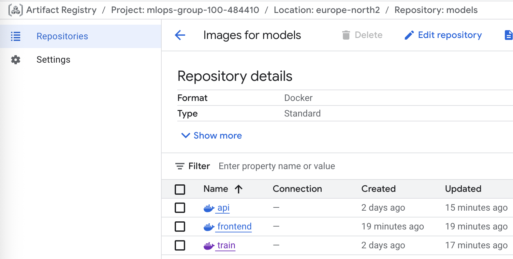
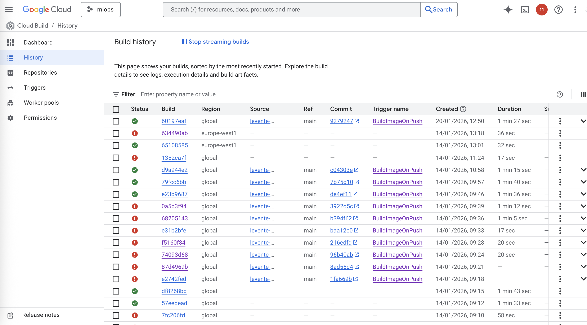
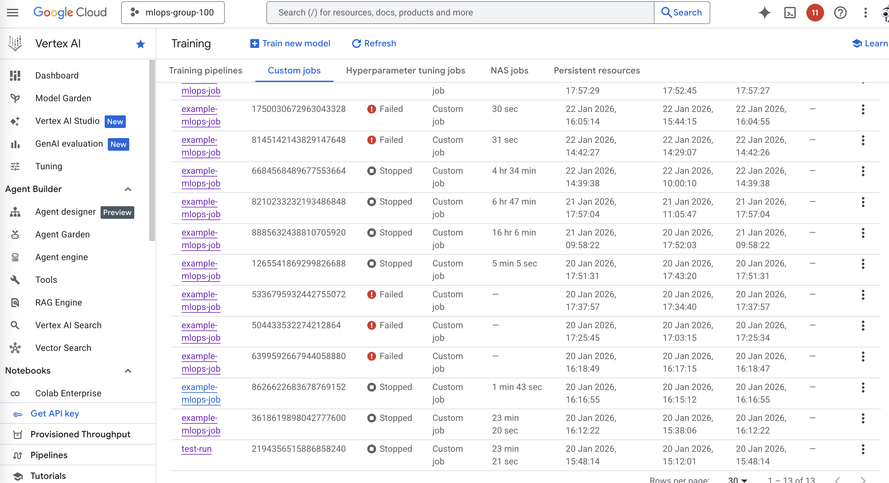
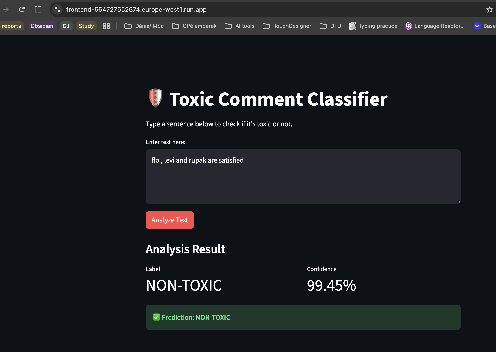
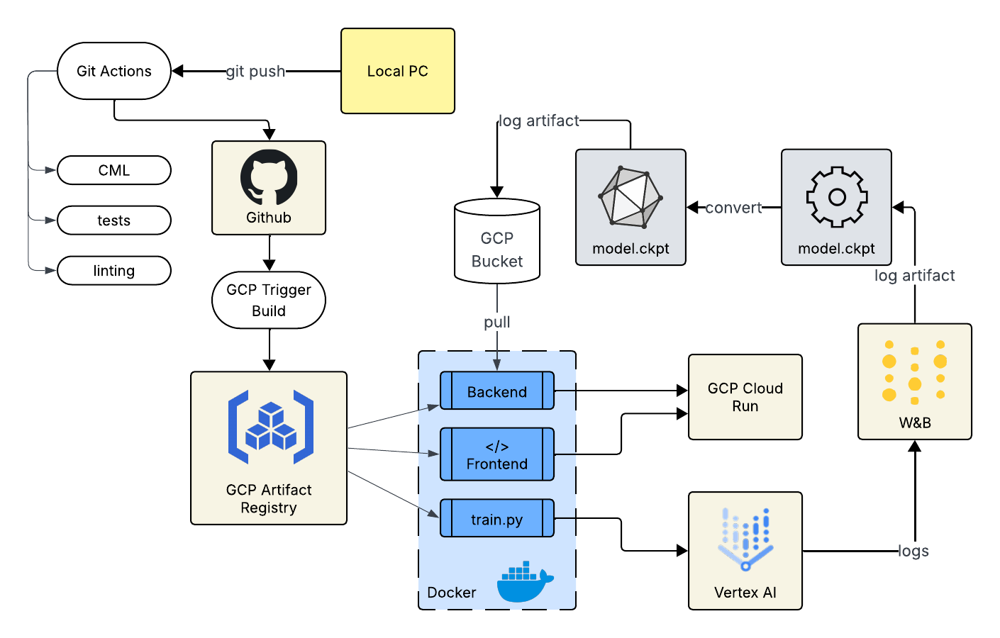

Operations
This is the report template for the exam. Please only remove the text formatted as with three dashes in front and behind
like:
--- question 1 fill here ---
Where you instead should add your answers. Any other changes may have unwanted consequences when your report is
auto-generated at the end of the course. For questions where you are asked to include images, start by adding the image
to the figures subfolder (please only use .png, .jpg or .jpeg) and then add the following code in your answer:

In addition to this markdown file, we also provide the report.py script that provides two utility functions:
Running:
bash
python report.py html
Will generate a .html page of your report. After the deadline for answering this template, we will auto-scrape
everything in this reports folder and then use this utility to generate a .html page that will be your serve
as your final hand-in.
Running
bash
python report.py check
Will check your answers in this template against the constraints listed for each question e.g. is your answer too
short, too long, or have you included an image when asked. For both functions to work you mustn't rename anything.
The script has two dependencies that can be installed with
bash
pip install typer markdown
or
bash
uv add typer markdown
Overall project checklist
The checklist is exhaustive which means that it includes everything that you could do on the project included in the
curriculum in this course. Therefore, we do not expect at all that you have checked all boxes at the end of the project.
The parenthesis at the end indicates what module the bullet point is related to. Please be honest in your answers, we
will check the repositories and the code to verify your answers.
Week 1
- [X] Create a git repository (M5)
- [X] Make sure that all team members have write access to the GitHub repository (M5)
- [X] Create a dedicated environment for you project to keep track of your packages (M2)
- [X] Create the initial file structure using cookiecutter with an appropriate template (M6)
- [X] Fill out the
data.py file such that it downloads whatever data you need and preprocesses it (if necessary) (M6)
- Implement function that returns dataset as a Transformers Dataset object
- @Rupak
- [X] Add a model to
model.py and a training procedure to train.py and get that running (M6)
- [-] Remember to fill out the
requirements.txt and requirements_dev.txt file with whatever dependencies that you
are using (M2+M6)
- Skipped for now as we are using uv as a dependency manager.
- [X] Remember to comply with good coding practices (
pep8) while doing the project (M7)
- Use
ruff for linting and formatting (add any customizations to pyproject.toml)
- @Flo
- [X] Do a bit of code typing and remember to document essential parts of your code (M7)
- @everyone
- E.g.: use type hints in function signatures (arg+return) and docstrings for classes/functions
- [X] Setup version control for your data or part of your data (M8)
- Data is version controlled using DVC in a GCP Bucket.
- @Levi
- [X] Add command line interfaces and project commands to your code where it makes sense (M9)
- Train and evaluation scripts are wrapped into invoke tasks. Arguments are passed via config files using Hydra.
- @Levi
- [X] Construct one or multiple docker files for your code (M10)
- [X] Build the docker files locally and make sure they work as intended (M10)
- [X] Write one or multiple configurations files for your experiments (M11)
- [X] Used Hydra to load the configurations and manage your hyperparameters (M11)
- ([X]) Use profiling to optimize your code (M12)
- [X] Use logging to log important events in your code (M14)
- @Levi
- Results are logged to Weights & Biases
- [X] Use Weights & Biases to log training progress and other important metrics/artifacts in your code (M14)
- [-] Consider running a hyperparameter optimization sweep (M14)
- Skipped because we already had adequate results with manual tuning.
- [X] Use PyTorch-lightning (if applicable) to reduce the amount of boilerplate in your code (M15)
- [X] Use PyTorch-lightning (if applicable) to reduce the amount of boilerplate in your code (M15)
Week 2
- [X] Write unit tests related to the data part of your code (M16)
- [X] Write unit tests related to model construction and or model training (M16)
- [X] Calculate the code coverage (M16)
- [X] Get some continuous integration running on the GitHub repository (M17)
- [X] Add caching and multi-os/python/pytorch testing to your continuous integration (M17)
- [X] Add a linting step to your continuous integration (M17)
- [X] Add pre-commit hooks to your version control setup (M18)
- [X] Add a continues workflow that triggers when data changes (M19)
- [ ] Add a continues workflow that triggers when changes to the model registry is made (M19)
- [X] Create a data storage in GCP Bucket for your data and link this with your data version control setup (M21)
- [X] Create a trigger workflow for automatically building your docker images (M21)
- [X] Get your model training in GCP using either the Engine or Vertex AI (M21)
- [ ] Create a FastAPI application that can do inference using your model (M22)
- [ ] Deploy your model in GCP using either Functions or Run as the backend (M23)
- [ ] Write API tests for your application and setup continues integration for these (M24)
- [ ] Load test your application (M24)
- [ ] Create a more specialized ML-deployment API using either ONNX or BentoML, or both (M25)
- [ ] Create a frontend for your API (M26)
Week 3
- [X] Check how robust your model is towards data drifting (M27)
We test model robustness using the Reddit toxic comments dataset (https://www.kaggle.com/datasets/estebanmarcelloni/ruddit-papers-comments-scored). This dataset was sourced from a different platform but inherently contains comments that are either toxic or not, therefore it makes a good candidate for testing data drift.
- We load the Reddit dataset and pass the comments through our inference API to obtain predictions.
- We then call the /monitoring endpoint of our API, which generates a data drift report comparing the Reddit dataset (current data) with our original training dataset (reference data).
- We also calculate the performance of our model quantified by accuracy, F1, ROCAUC scores on the Reddit dataset.
- @Levi
- [X] Deploy to the cloud a drift detection API (M27)
- The drift detection API is deployed in the same service as the prediction API, and it can be reached at
/monitoring endpoint.
- @Levi
- [ ] Instrument your API with a couple of system metrics (M28)
- [ ] Setup cloud monitoring of your instrumented application (M28)
- [ ] Create one or more alert systems in GCP to alert you if your app is not behaving correctly (M28)
- [X] If applicable, optimize the performance of your data loading using distributed data loading (M29)
In the configs/training.yaml file, num_workers can be configured to use multiple workers for data loading.
- [ ] If applicable, optimize the performance of your training pipeline by using distributed training (M30)
- [ ] Play around with quantization, compilation and pruning for you trained models to increase inference speed (M31)
Extra
- [ ] Write some documentation for your application (M32)
- [ ] Publish the documentation to GitHub Pages (M32)
- [ ] Revisit your initial project description. Did the project turn out as you wanted?
- [ ] Create an architectural diagram over your MLOps pipeline
- [ ] Make sure all group members have an understanding about all parts of the project
- [ ] Uploaded all your code to GitHub
Group information
Question 1
Enter the group number you signed up on
Answer:
100
Question 2
Enter the study number for each member in the group
Example:
sXXXXXX, sXXXXXX, sXXXXXX
Answer:
s242957, s251969, s252684
Question 3
A requirement to the project is that you include a third-party package not covered in the course. What framework
did you choose to work with and did it help you complete the project?
Recommended answer length: 100-200 words.
Example:
We used the third-party framework ... in our project. We used functionality ... and functionality ... from the
package to do ... and ... in our project.
Answer:
We used the third-party framework Transformers from Hugging Face in our project. We used the AutoTokenizer for text preprocessing and tokenization, AutoModelForSequenceClassification for loading pretrained transformer models (specifically BERTweet), and AutoConfig for managing model configurations with custom label mappings. The framework was essential for implementing our toxic comment classification system, as it provided the pretrained language model backbone (vinai/bertweet-base) that we fine-tuned on our dataset. Additionally, we leveraged the framework's integration with PyTorch Lightning to streamline the training pipeline, and its tokenization utilities to handle Twitter-specific text normalization. This significantly accelerated development and allowed us to focus on MLOps infrastructure rather than building transformers from scratch.
Coding environment
In the following section we are interested in learning more about you local development environment. This includes
how you managed dependencies, the structure of your code and how you managed code quality.
Question 4
Explain how you managed dependencies in your project? Explain the process a new team member would have to go
through to get an exact copy of your environment.
Recommended answer length: 100-200 words
Example:
We used ... for managing our dependencies. The list of dependencies was auto-generated using ... . To get a
complete copy of our development environment, one would have to run the following commands
Answer:
We used uv for managing our dependencies in this project. All dependencies are specified in the pyproject.toml file under the [project.dependencies] section for production dependencies and [dependency-groups.dev] for development dependencies. The uv.lock file ensures reproducible installations by locking exact versions of all dependencies and their transitive dependencies.
To get an exact copy of our development environment, a new team member would need to:
- Install
uv (if not already installed): pip install uv
- Clone the repository
- Navigate to the project root directory
- Run
uv sync --all-group to install all dependencies (both production and development)
This will automatically create a virtual environment and install all packages with the exact versions specified in the lock file. The project requires Python 3.12, which is specified in both pyproject.toml and .python-version. For PyTorch specifically, we configured uv to use the CPU-only PyTorch index to reduce dependency size, as defined in the [tool.uv.sources] section of pyproject.toml.
Question 5
We expect that you initialized your project using the cookiecutter template. Explain the overall structure of your
code. What did you fill out? Did you deviate from the template in some way?
Recommended answer length: 100-200 words
Example:
From the cookiecutter template we have filled out the ... , ... and ... folder. We have removed the ... folder
because we did not use any ... in our project. We have added an ... folder that contains ... for running our
experiments.
Answer:
From the cookiecutter template we filled out the src/ folder containing our main application code (data.py, model.py, train.py, evaluate.py), the tests/ folder with unit tests for data and model components, the configs/ folder with Hydra configuration files for training and evaluation, and the dockerfiles/ folder with container definitions for training and API deployment. We also made use of the tasks.py file in the root directory and defined extra invoke commands for common operations like training and evaluation. We have added a gcp folder that contains scripts for deploying to Google Cloud Platform. We have removed the notebooks/ folder as we did not use Jupyter notebooks in our workflow.
Question 6
Did you implement any rules for code quality and format? What about typing and documentation? Additionally,
explain with your own words why these concepts matters in larger projects.
Recommended answer length: 100-200 words.
Example:
We used ... for linting and ... for formatting. We also used ... for typing and ... for documentation. These
concepts are important in larger projects because ... . For example, typing ...
Answer:
We used ruff for both linting and formatting our code. Ruff was configured in pyproject.toml with line length of 120 characters, and specific linting rules enabled (imports, errors, warnings, docstrings). We implemented type hints throughout our codebase using Python's type annotations for function parameters and return values. For documentation, we used Google-style docstrings for all classes and functions, which are enforced by ruff's docstring linting rules. We also implemented pre-commit hooks to automatically run ruff checks before each commit. These concepts are critical in larger projects because they ensure code consistency across team members, make the codebase more maintainable, catch bugs early through type checking, and provide clear documentation for future developers. Type hints particularly help with IDE autocomplete and make refactoring safer.
Version control
In the following section we are interested in how version control was used in your project during development to
corporate and increase the quality of your code.
Question 7
How many tests did you implement and what are they testing in your code?
Recommended answer length: 50-100 words.
Example:
In total we have implemented X tests. Primarily we are testing ... and ... as these the most critical parts of our
application but also ... .
Answer:
In total we have implemented 71 tests. We are testing the data loading and preprocessing pipeline (test_data.py with 16 tests), the datamodule and dataset classes (test_datamodule.py with 13 tests), model initialization and training steps (test_model.py with 13 tests), the FastAPI endpoints including /health and /predict (test_api.py with 12 tests), and our invoke tasks for docker operations (test_tasks.py with 6 tests). These cover the most critical parts of our application including data integrity validation, model forward pass and training, API request/response handling, and infrastructure automation. We also have tests for drift monitoring functionality that validate metrics calculations and API parameter handling.
Question 8
What is the total code coverage (in percentage) of your code? If your code had a code coverage of 100% (or close
to), would you still trust it to be error free? Explain you reasoning.
Recommended answer length: 100-200 words.
Example:
The total code coverage of code is X%, which includes all our source code. We are far from 100% coverage of our **
code and even if we were then...*
Answer:
The total code coverage of our project is 47%, which includes all core source code. This level of coverage is mainly due to time constraints and prioritization decisions during the project. Some components such as cloud integrations and Dockerized services are inherently harder to test using unit tests and were therefore covered only partially or through manual testing.
Even if our code coverage were close to 100%, we would not consider the system to be completely error-free. Code coverage only indicates which lines of code are executed during testing, not whether the tests adequately verify correct behavior. High coverage does not guarantee protection against logical errors, untested edge cases, incorrect assumptions, race conditions in concurrent code, or failures arising from interactions with external services. For these reasons, code coverage should be seen as a helpful indicator, but not a definitive measure of software correctness or robustness.
Question 9
Did you workflow include using branches and pull requests? If yes, explain how. If not, explain how branches and
pull request can help improve version control.
Recommended answer length: 100-200 words.
Example:
We made use of both branches and PRs in our project. In our group, each member had an branch that they worked on in
addition to the main branch. To merge code we ...
Answer:
Yes, we made use of both branches and pull requests in our project. Based on the checklist annotations (e.g., @Flo, @Levi, @Rupak), each member worked on specific features in their own branches. The main branch was protected, and code had to be merged through pull requests which allowed for code review before integration. This workflow helped us maintain code quality, catch bugs early through peer review, and avoid conflicts by keeping work isolated until it was ready to merge. Pull requests also served as documentation of what changes were made and why, providing context for future reference. Our CI/CD pipelines were configured to run on pull requests, ensuring that tests passed and code was properly formatted before merging.
Question 10
Did you use DVC for managing data in your project? If yes, then how did it improve your project to have version
control of your data. If no, explain a case where it would be beneficial to have version control of your data.
Recommended answer length: 100-200 words.
Example:
We did make use of DVC in the following way: ... . In the end it helped us in ... for controlling ... part of our
pipeline
Answer:
We did make use of DVC in our project to manage our toxic comments dataset. We configured DVC to use a Google Cloud Storage bucket as the remote storage backend. This is evidenced by the data.dvc file in the repository root and our .github/workflows/cml_data.yaml workflow that triggers on data changes. DVC helped us in several ways: (1) It kept our git repository lightweight by not storing large CSV files directly, (2) It enabled reproducibility by tracking exact versions of the dataset used for each experiment, (3) It facilitated team collaboration as multiple members could pull the same dataset versions, and (4) It integrated with our CI/CD pipeline through the CML workflow to automatically detect and validate data changes. This was particularly important as our training dataset contains 120,000 samples and our computed GLOVE embeddings file is ~109MB.
Question 11
Discuss you continuous integration setup. What kind of continuous integration are you running (unittesting,
linting, etc.)? Do you test multiple operating systems, Python version etc. Do you make use of caching? Feel free
to insert a link to one of your GitHub actions workflow.
Recommended answer length: 200-300 words.
Example:
We have organized our continuous integration into 3 separate files: one for doing ..., one for running ... testing
and one for running ... . In particular for our ..., we used ... .An example of a triggered workflow can be seen
here:
Answer:
We have organized our continuous integration into 4 separate workflow files, each serving a distinct purpose in maintaining code quality and reproducibility:
-
tests.yaml - This is our most comprehensive workflow that runs unit tests with pytest across multiple dimensions to ensure broad compatibility. It tests across three operating systems (Ubuntu, Windows, macOS), two Python versions (3.11, 3.12), and two PyTorch versions (2.6.0, 2.7.0), resulting in 18 different test configurations using GitHub Actions' matrix strategy. This extensive testing matrix helps us catch platform-specific bugs and ensures our code works across different environments. The workflow uses caching of uv dependencies to significantly speed up build times, reducing CI costs and iteration time.
-
linting.yaml - This workflow enforces code quality standards by running ruff for both linting and formatting checks. It ensures that all code adheres to our style guidelines (120 character line length, proper imports, docstrings, etc.) before it can be merged. This automated check prevents style inconsistencies from entering the codebase and maintains readability across contributions from different team members.
-
cml_data.yaml - This workflow is designed to trigger when data changes are detected (via DVC file modifications). It validates data integrity by checking file sizes, formats, and basic statistics. Optionally, it can automatically trigger a training run and post performance metrics as pull request comments using CML (Continuous Machine Learning), enabling data scientists to see immediately how data changes affect model performance without manual intervention.
-
pre-commit-update.yaml - This maintenance workflow runs on a schedule to automatically update pre-commit hook versions, ensuring our development tools stay current with the latest bug fixes and features without manual tracking.
Running code and tracking experiments
In the following section we are interested in learning more about the experimental setup for running your code and
especially the reproducibility of your experiments.
Question 12
How did you configure experiments? Did you make use of config files? Explain with coding examples of how you would
run a experiment.
Recommended answer length: 50-100 words.
Example:
We used a simple argparser, that worked in the following way: Python my_script.py --lr 1e-3 --batch_size 25
Answer:
We used Hydra for configuration management with YAML config files. Our main configuration files are configs/training.yaml and configs/evaluation.yaml. To run an experiment, you would use: uv run invoke train which internally calls uv run src/toxic_comments/train.py. Hydra automatically loads the training.yaml config, and you can override parameters using the syntax: uv run src/toxic_comments/train.py data_dir=custom/path learning_rate=1e-4 batch_size=64. All hyperparameters including batch_size (32), learning_rate (2e-5), epochs (2), max_length (128), and model_name_or_path (vinai/bertweet-base) are defined in the config files, making experiments easily reproducible and modifiable.
Question 13
Reproducibility of experiments are important. Related to the last question, how did you secure that no information
is lost when running experiments and that your experiments are reproducible?
Recommended answer length: 100-200 words.
Example:
We made use of config files. Whenever an experiment is run the following happens: ... . To reproduce an experiment
one would have to do ...
Answer:
We secured reproducibility through multiple mechanisms: (1) All hyperparameters are stored in Hydra config files (training.yaml, evaluation.yaml) which are version controlled in git, (2) Each experiment is logged to Weights & Biases which automatically captures the config file, git commit hash, and system information, (3) Model checkpoints are saved with their configs using PyTorch Lightning's built-in checkpoint system, (4) We use DVC to version control the exact dataset used for training, and (5) Our dependencies are locked in uv.lock file ensuring exact package versions. When an experiment runs, Hydra saves the complete config to the output directory under outputs/YYYY-MM-DD/HH-MM-SS/.hydra/, and W&B logs all metrics, artifacts, and system information. To reproduce an experiment, one would checkout the specific git commit, pull the correct data version with dvc pull, and run training with the saved config.
Question 14
Upload 1 to 3 screenshots that show the experiments that you have done in W&B (or another experiment tracking
service of your choice). This may include loss graphs, logged images, hyperparameter sweeps etc. You can take
inspiration from this figure. Explain what metrics you are tracking and why they are
important.
Recommended answer length: 200-300 words + 1 to 3 screenshots.
Example:
As seen in the first image when have tracked ... and ... which both inform us about ... in our experiments.
As seen in the second image we are also tracking ... and ...
Answer:
 We have tracked train and validation loss and accuracy. These metrics inform us about the model's learning progress during training and whether it's overfitting or underfitting. The training loss decreases consistently, showing the model is learning, while validation loss and accuracy help us detect overfitting when validation metrics diverge from training metrics. Accuracy is important for classification tasks as it directly measures how often the model predicts the correct toxicity label.
We have tracked train and validation loss and accuracy. These metrics inform us about the model's learning progress during training and whether it's overfitting or underfitting. The training loss decreases consistently, showing the model is learning, while validation loss and accuracy help us detect overfitting when validation metrics diverge from training metrics. Accuracy is important for classification tasks as it directly measures how often the model predicts the correct toxicity label.
 In the second image, it can be seen that we monitored memory, GPU and disk utilization. Monitoring these system metrics helps us optimize batch sizes and data loading strategies, and figure out any potential bottlenecks in training.
In the second image, it can be seen that we monitored memory, GPU and disk utilization. Monitoring these system metrics helps us optimize batch sizes and data loading strategies, and figure out any potential bottlenecks in training.
 As seen in the final image, we also tracked F1 and AUROC scores. F1 score is crucial for imbalanced datasets like ours, as it balances precision and recall, ensuring that both false positives and false negatives are minimized. AUROC provides insight into the model's ability to distinguish between classes across different threshold settings, which is important for evaluating overall model performance beyond just accuracy.
As seen in the final image, we also tracked F1 and AUROC scores. F1 score is crucial for imbalanced datasets like ours, as it balances precision and recall, ensuring that both false positives and false negatives are minimized. AUROC provides insight into the model's ability to distinguish between classes across different threshold settings, which is important for evaluating overall model performance beyond just accuracy.
In the end we did not do any parameter sweeps as the manual tuning already provided satisfactory results with a validation accuracy of ~0.93 and F1 score of ~0.92.
Question 15
Docker is an important tool for creating containerized applications. Explain how you used docker in your
experiments/project? Include how you would run your docker images and include a link to one of your docker files.
Recommended answer length: 100-200 words.
Example:
For our project we developed several images: one for training, inference and deployment. For example to run the
training docker image: docker run trainer:latest lr=1e-3 batch_size=64. Link to docker file:
Answer:
For our project we developed three Docker images: one for training, second for the frontend and last one for API deployment. The training image (train.dockerfile) uses the uv base image, installs system dependencies, syncs Python packages, then crucially overrides the CPU-only PyTorch with GPU-enabled version (cu128) for Vertex AI training. To run the training docker image locally: docker run trainer:latest. The frontend.dockerfile is responsible for the user interface application (typically Streamlit in this context) and for the deployment, we have api.dockerfile for the FastAPI service. The docker images are automatically built and pushed to GCP Artifact Registry via Cloud Build triggers defined in gcp/cloudbuild.yaml. We also use invoke tasks to manage docker operations: uv run invoke docker-build and uv run invoke docker-push. Link to train dockerfile: train.dockerfile , api dockerfile: api.dockerfile and frontend dockerfile: frontend.dockerfile).
Question 16
When running into bugs while trying to run your experiments, how did you perform debugging? Additionally, did you
try to profile your code or do you think it is already perfect?
Recommended answer length: 100-200 words.
Example:
Debugging method was dependent on group member. Some just used ... and others used ... . We did a single profiling
run of our main code at some point that showed ...
Answer:
Debugging methods varied by team member and situation. We primarily used print statements and logging for quick debugging, and VS Code's debugger for interactive debugging sessions. For API debugging, we used FastAPI's automatic documentation at /docs and pytest's test client. We did perform profiling using Python's cProfile and snakeviz for visualization (included in dev dependencies). The profiling results are stored in reports/profiles/prof.prof. Profiling revealed that data loading could be optimized with multiple workers (configurable via num_workers in training.yaml). However, the code is far from perfect, there's always room for optimization in model inference speed and memory usage. We initially attempted to use the PyTorch Lightning profiler together with the TensorBoard frontend, but found the integration difficult to set up and interpret, which led us to prefer simpler profiling tools.
Working in the cloud
In the following section we would like to know more about your experience when developing in the cloud.
Question 17
List all the GCP services that you made use of in your project and shortly explain what each service does?
Recommended answer length: 50-200 words.
Example:
We used the following two services: Engine and Bucket. Engine is used for... and Bucket is used for...
Answer:
We used the following GCP services:
-
Cloud Storage (Buckets) - For storing datasets (tweets-dataset bucket with training data and GLOVE embeddings ~272MB) and prediction logs (predictions_db bucket). Also used as DVC remote storage.
-
Artifact Registry - For storing and versioning our Docker images (train and api images) that are built via Cloud Build.
-
Cloud Run - For automatically building and pushing Docker images when code changes, configured via cloudbuild.yaml and vertex_ai_train_cloudbuild.yaml.
-
Vertex AI - For training our models on GPU instances (T4 GPUs) in the cloud, triggered by Cloud Build.
4+1. Google Cloud Storage API (via google-cloud-storage Python library) - For programmatic access to buckets from our FastAPI application for downloading embeddings and managing predictions.
Question 18
The backbone of GCP is the Compute engine. Explained how you made use of this service and what type of VMs
you used?
Recommended answer length: 100-200 words.
Example:
We used the compute engine to run our ... . We used instances with the following hardware: ... and we started the
using a custom container: ...
Answer:
We primarily used Vertex AI for training rather than directly using Compute Engine VMs. Vertex AI runs our training jobs on managed compute with the following configuration: We used instances with T4 GPUs (specified in our training container) and the jobs were started using our custom Docker container from Artifact Registry (train:latest). The training configuration is defined in gcp/train_config.yaml and gcp/vertex_ai_train_cloudbuild.yaml. Vertex AI abstracts away the VM management, automatically provisions the hardware, runs our containerized training job, and tears down resources when complete, which is more cost-effective than maintaining persistent Compute Engine instances. Our Docker image installs PyTorch with CUDA 12.8 support to utilize the GPU acceleration.
Question 19
Insert 1-2 images of your GCP bucket, such that we can see what data you have stored in it.
You can take inspiration from this figure.
Answer:


Question 20
Upload 1-2 images of your GCP artifact registry, such that we can see the different docker images that you have
stored. You can take inspiration from this figure.
Answer:

Question 21
Upload 1-2 images of your GCP cloud build history, so we can see the history of the images that have been build in
your project. You can take inspiration from this figure.
Answer:

Question 22
Did you manage to train your model in the cloud using either the Engine or Vertex AI? If yes, explain how you did
it. If not, describe why.
Recommended answer length: 100-200 words.
Example:
We managed to train our model in the cloud using the Engine. We did this by ... . The reason we choose the Engine
was because ...
Answer:
Yes, we managed to train our model in the cloud using Vertex AI. We configured a Cloud Build trigger that submits training jobs to Vertex AI using our custom Docker container from Artifact Registry. The configuration is defined in gcp/vertex_ai_train_cloudbuild.yaml and gcp/train_config.yaml. We chose Vertex AI because it abstracts away VM management and provides easy integration with containerized training jobs that support GPU acceleration. However, we encountered an issue where the training job ran successfully but did not utilize the GPU as expected. Due to time constraints and the lengthy VM provisioning time for each debugging iteration, we were unable to fully investigate the root cause. Although we had to shut down the training job prematurely, as with only CPU it would take an impractical amount of time to complete, we are confident that with further debugging we could resolve the GPU utilization issue.

Deployment
Question 23
Did you manage to write an API for your model? If yes, explain how you did it and if you did anything special. If
not, explain how you would do it.
Recommended answer length: 100-200 words.
Example:
We did manage to write an API for our model. We used FastAPI to do this. We did this by ... . We also added ...
to the API to make it more ...
Answer:
Yes, we were successful to write an API for our toxic comment classification model using the FastAPI. For the efficient model inference we have utilised the ONNX Runtime, which is wrapped in lifespan. Additionally, the model weights are automatically downloaded from Google Cloud Storage (GCS) if they are missing locally. The ‘/health’ endpoint is to verify that the service is operational. The core function is ‘/predict’ which tokenizes the input text, runs the ONNX model, and applies a softmax function to calculate confidence scores which is used to retreive the correct output LABEL. This entire application is used in the api.dockerfile to streamline the deployment part.
Question 24
Did you manage to deploy your API, either in locally or cloud? If not, describe why. If yes, describe how and
preferably how you invoke your deployed service?
Recommended answer length: 100-200 words.
Example:
For deployment we wrapped our model into application using ... . We first tried locally serving the model, which
worked. Afterwards we deployed it in the cloud, using ... . To invoke the service an user would call
curl -X POST -F "file=@file.json"<weburl>
Answer:
Yes, we have successfully utilised the Google Cloud Platform (GCP) for the deployment of our API on the cloud. We first wrapped our application logic into a Docker container. We tagged the local image and pushed it to the Google Artifact Registry in the europe-north2 region.
We deployed the backend on Google Cloud Run for the of serving backend infrastructure. We also deployed a Streamlit frontend that serves as a user interface for the model.
To invoke the API using Command Line, a user needs to sends a request with a to the /predict endpoint. Below given is a sample on how could you do it:
curl -X POST <your-backend-app-url>/predict -H "Content-Type: application/json" -d '{"text": "example is the best thing”}
Question 25
Did you perform any unit testing and load testing of your API? If yes, explain how you did it and what results for
the load testing did you get. If not, explain how you would do it.
Recommended answer length: 100-200 words.
Example:
For unit testing we used ... and for load testing we used ... . The results of the load testing showed that ...
before the service crashed.
Answer:
For unit testing we used pytest with FastAPI's TestClient and unittest.mock for mocking external dependencies. We have 12 API-specific tests in test_api.py covering health checks, prediction endpoints with various inputs and error conditions, and proper status code handling. The tests mock model loading, GCS client, and database operations to run quickly without external dependencies. We have not yet performed formal load testing with tools like Locust or k6, but this would be important before production deployment to understand throughput limits, response times under load, and identify bottlenecks. Load testing would help determine optimal instance sizing and autoscaling thresholds for cloud deployment.
Question 26
Did you manage to implement monitoring of your deployed model? If yes, explain how it works. If not, explain how
monitoring would help the longevity of your application.
Recommended answer length: 100-200 words.
Example:
We did not manage to implement monitoring. We would like to have monitoring implemented such that over time we could
measure ... and ... that would inform us about this ... behaviour of our application.
Answer:
Yes, we implemented data drift monitoring in our deployed model through the /monitoring endpoint. The system works by: (1) Storing every prediction in GCS (predictions_db bucket), (2) When monitoring is requested, downloading reference training embeddings and GLOVE vectors from GCS, (3) Computing GLOVE embeddings for recent predictions to convert text to numerical features, (4) Using Evidently's DataDriftPreset to detect statistical drift across 50 embedding dimensions, (5) Calculating cosine similarity between reference and current data distributions, (6) Generating an interactive HTML report with drift metrics and visualizations. This helps longevity by alerting us when the input distribution shifts significantly from training data, indicating potential model performance degradation and need for retraining. We also tested robustness against the Reddit toxic comments dataset (different platform, similar task) and calculated accuracy, F1, and ROC-AUC metrics to quantify performance on drifted data.
Overall discussion of project
In the following section we would like you to think about the general structure of your project.
Question 27
How many credits did you end up using during the project and what service was most expensive? In general what do
you think about working in the cloud?
Recommended answer length: 100-200 words.
Example:
Group member 1 used ..., Group member 2 used ..., in total ... credits was spend during development. The service
costing the most was ... due to ... . Working in the cloud was ...
Answer:
Honestly, our services have not been running in the cloud for an extended period, so proportionally our largest expense was storing Docker images in Artifact Registry ($0.11), followed by Cloud Storage ($0.03), and Cloud Build ($0.01). However, if we had kept the services running for a longer duration, training on Vertex AI and hosting the application would have become the most expensive services due to GPU/CPU compute costs. Working in the cloud was challenging, we faced several issues with authentication, permissions, and service configurations that required significant time to resolve. However, when our application finally went live, it was the most satisfying part of the project.
Question 28
Did you implement anything extra in your project that is not covered by other questions? Maybe you implemented
a frontend for your API, use extra version control features, a drift detection service, a kubernetes cluster etc.
If yes, explain what you did and why.
Recommended answer length: 0-200 words.
Example:
We implemented a frontend for our API. We did this because we wanted to show the user ... . The frontend was
implemented using ...
Answer:
 We implemented a simple frontend for our FastAPI model prediction API using streamlit. The frontend allows users to input text comments directly in the browser and receive toxicity predictions without needing to use curl or Postman.
Question 29
Include a figure that describes the overall architecture of your system and what services that you make use of.
You can take inspiration from this figure. Additionally, in your own words, explain the
overall steps in figure.
Recommended answer length: 200-400 words
Example:
The starting point of the diagram is our local setup, where we integrated ... and ... and ... into our code.
Whenever we commit code and push to GitHub, it auto triggers ... and ... . From there the diagram shows ...
Answer:

The above figure illustrates the overall architecture of our system, spanning local development, continuous integration, cloud-based training, and deployment. The starting point of the system is the local development environment, where all team members implement and test code for data processing, model training, inference, and monitoring. Docker is used to containerize the different components, ensuring reproducibility across environments.
Whenever code is committed and pushed to GitHub, GitHub Actions is automatically triggered. These workflows perform linting, testing, and other quality checks before building Docker images. Once the checks pass, the images are pushed to the Google Cloud Artifact Registry. Separate images are built for the frontend, backend (inference API), and training pipeline.
The frontend and backend services are deployed using Google Cloud Run. The frontend sends user-provided text comments to the backend, which exposes an API for inference and monitoring. For model training, the training container is executed in Google Cloud using Vertex AI. This training job logs metrics, configurations, and artifacts to Weights & Biases, which is used for experiment tracking and comparison.
The trained model checkpoint is stored as an artifact in Weights & Biases. After training, the model is converted into the ONNX format to enable more efficient inference. The resulting ONNX model is then stored in a Google Cloud Storage bucket, which acts as the centralized model storage.
During runtime, the backend service pulls the latest ONNX model from the GCP bucket and loads it to serve inference requests. Incoming text comments from the frontend are classified as either toxic or non-toxic. Additionally, the backend exposes a monitoring endpoint that uses Evidently to perform data drift analysis by comparing incoming data to the reference training data.
Overall, this architecture enables a modular, scalable, and reproducible machine learning system with automated testing, cloud-based training, experiment tracking, and production-ready deployment.
Question 30
Discuss the overall struggles of the project. Where did you spend most time and what did you do to overcome these
challenges?
Recommended answer length: 200-400 words.
Example:
The biggest challenges in the project was using ... tool to do ... . The reason for this was ...
Answer:
The project involved several practical and organizational challenges, most of which were related to tooling, infrastructure, and rapidly evolving external platforms. One of the most significant struggles was working with Docker. While containerization was essential for reproducibility and deployment, the images quickly became very large and the setup process was complex. This was particularly frustrating during deployment, as slow upload speeds caused image pushes to take a considerable amount of time, significantly slowing down iteration.
To mitigate this, we introduced dependency grouping using uv to better control which dependencies were installed for specific components (e.g., backend-only images). While this ultimately helped reduce image size and build time, it was itself a complex solution that required substantial experimentation. In hindsight, this structure should have been implemented from the beginning, as retrofitting it later added unnecessary overhead. Additionally, the commands required to selectively install dependency groups were not immediately intuitive, further increasing setup time.
Another major time investment was resolving authentication and permission issues across multiple platforms, particularly Weights & Biases (wandb) and Google Cloud Platform (GCP). Determining correct role assignments and access permissions required extensive testing and trial-and-error before a stable configuration was achieved. Wandb itself posed several challenges, including an unintuitive team and project structure, difficulty managing experiments alongside external models within the same runs, and frequent UI changes that did not align with the course material.
Finally, monitoring with Evidently was more difficult than expected, as both the package documentation and course resources were outdated, making correct usage unclear and requiring additional independent investigation.
Question 31
State the individual contributions of each team member. This is required information from DTU, because we need to
make sure all members contributed actively to the project. Additionally, state if/how you have used generative AI
tools in your project.
Recommended answer length: 50-300 words.
Example:
Student sXXXXXX was in charge of developing of setting up the initial cookie cutter project and developing of the
docker containers for training our applications.
Student sXXXXXX was in charge of training our models in the cloud and deploying them afterwards.
All members contributed to code by...
We have used ChatGPT to help debug our code. Additionally, we used GitHub Copilot to help write some of our code.
Answer:
The project work was distributed clearly among all team members, with each contributing substantially to different technical aspects of the system.
Flo (s251969) was primarily responsible for project structure, code quality, and reliability. This included setting up the initial repository environment, creating the cookiecutter-based project structure, enforcing coding standards using ruff, and implementing profiling. Flo also led testing and quality assurance by writing unit tests for data and model components, setting up continuous integration with linting, caching, and multi-environment testing, calculating code coverage, and configuring pre-commit hooks. Additionally, Flo contributed to monitoring and system-level considerations.
Levi (s242957) focused mainly on the core machine learning pipeline and cloud integration. This included model implementation and training using PyTorch Lightning, experiment configuration and management with Hydra, logging and experiment tracking with Weights & Biases, and versioning data using DVC backed by a GCP bucket. Levi also handled cloud-based training, CI workflows triggered by data changes, Docker build automation, and deployment of the prediction and drift-detection APIs, including robustness evaluation under data drift.
Rupak (s252684) was responsible for data handling and deployment-related components. This included implementing data loading and preprocessing, constructing and validating Docker images, and working on the inference API and deployment-oriented tasks such as API testing, load testing, and performance optimization.
All members contributed to coding, documentation, debugging, and design discussions throughout the project.
We used generative AI tools such as ChatGPT and GitHub Copilot as auxiliary aids for debugging, clarifying APIs, and improving code readability, while all core design decisions, implementations, and evaluations were performed by the team.
{kind=link}
{kind=link}
{kind=link}
{kind=link}
{kind=link}